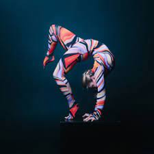

What is Acrobatics
Acrobatics is the performance of human feats of balance, agility, and motor coordination. Acrobatic skills are used in performing arts, sporting events, and martial arts. Acrobatics was invented/created by the Ancient Greeks, and in China acrobats have been a part of their culture since the Tang Dynasty (203 BC). Many acrobats perform in fairgrounds, circuses, and theatres.
